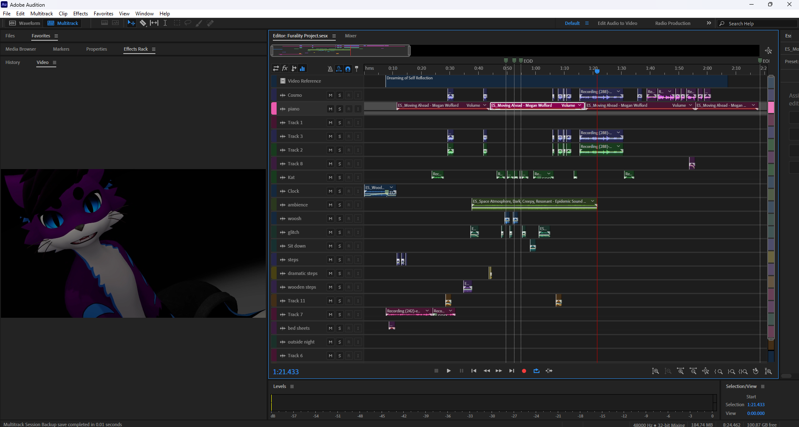
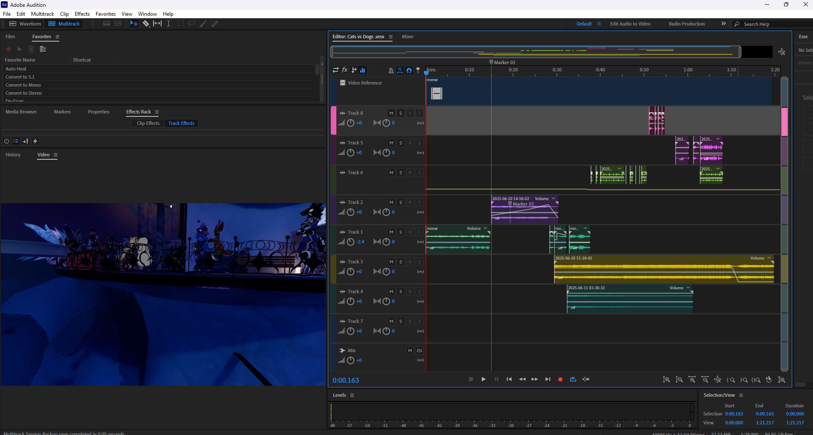

Audio Design Projects
Deltarune Animation

This project contains a animation from youtube content creator z Ke that shows the fight against Deltarunes antagonist The Roaring Knight. The video contained here is a finished product of my origonal sound design work on top of the origional footage and soundtrack used in the origional video. Voice acting for the character Ralsei was done by that of Zeta_Gauntlant. Every other voice sfx or design was done by me.
Dreaming of Self Reflection
During the 2025 VR Convention - Furality Somna - I created a VRChat Short Film to submit to the yearly Furality Showcase. The submission could contain anything within guidelines and ideally towards the theme of the convention, that being "Somna" or dreams. This vide submission was both filmed and editing using VRChat recording software, alongside Adobe products in Premier Pro and Audition. The story tells a tale of self reflecting on ones journey through their content adventure, seing all that has changed and grown, both good and bad. Other voice and body actor included user LunarDude.
Furality
Dogs Vs Cats

This video was done during the Furry Virtual con Furality, during one of its "Dogs" meetups. Me and a friend of mine - Eggwuh - had planned a fun video to record as there were an equal number of cats to dogs at the "Dogs Avatar Meetup". Through the filming of Eggwuh, I was able to then edit the film in both Adobe Premier Pro and Audition, to bring together this final whimsical project.